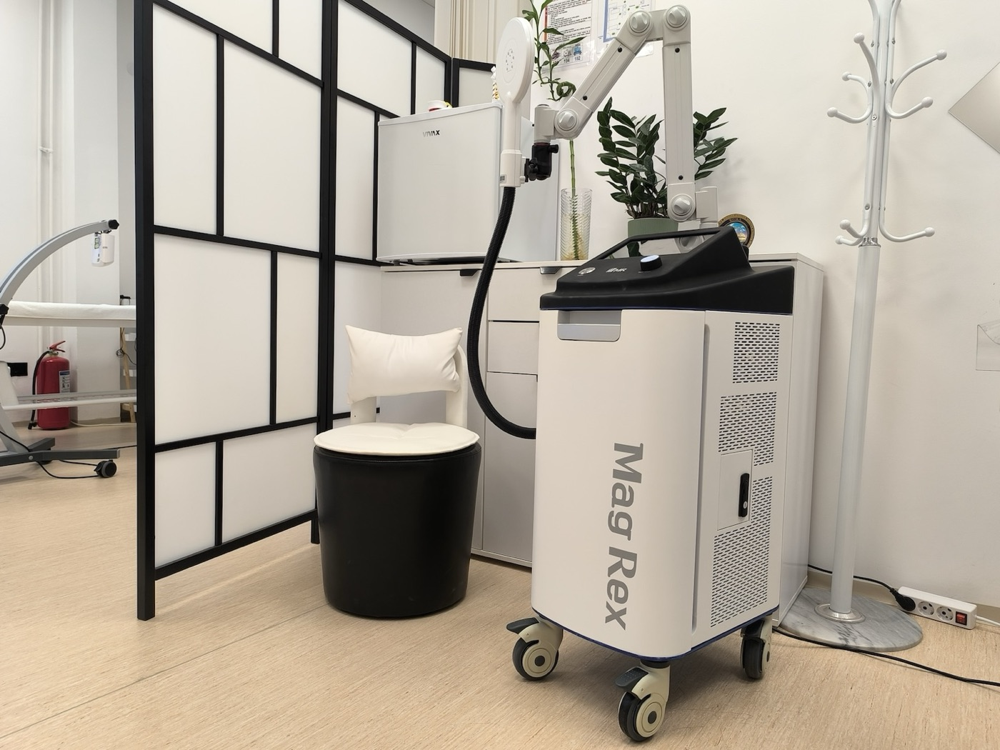
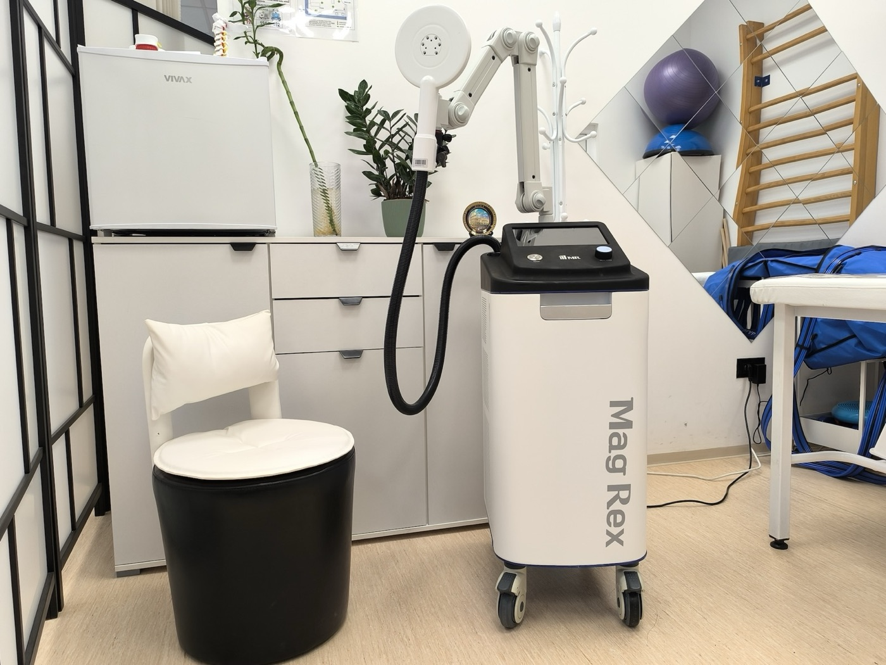
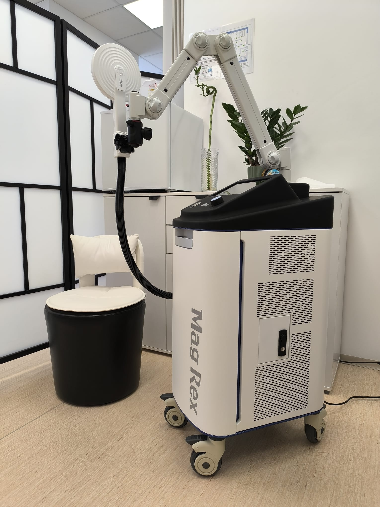

Magnetna terapija — dubinski tretman bola bez bola
Verovatno ste već probali masažu, kreme, lekove protiv bolova ili klasičnu elektroterapiju — a bol u kolenu, kuku, leđima ili petama i dalje se vraća. Magnetna terapija radi tamo gde ruke i površinski tretmani ne stižu: jaki, kratki impulsi magnetnog polja prolaze kroz odeću, ne greju kožu i ne bockaju, ali doseguju duboko u mišić, tetivu i kost — tamo gde se bol zaista „skriva".

Kako izgleda tretman
Legnete u odeći
Nema svlačenja, gela ni elektroda. Aplikator se postavlja iznad bolnog područja — ne dodiruje vas direktno, polje prolazi kroz odeću i meka tkiva.
Osećate „kuckanje"
Ritmičke impulse osećate kao tiho lupkanje ili lagano trzanje mišića (neuromodulacija — smanjenje bolnih signala). Bez toplote, bez peckanja, bez igle.
Bez bola, bez pauze
Većina pacijenata se opusti, neko i zadrijema. Posle tretmana odmah nastavljate dan — nema crvenila, nema oporavka, nema ograničenja u kretanju.
Najbolje indikacije
Magnetna terapija je posebno korisna kada bol traje duže od nekoliko nedelja, kada je dubok i kada površinski tretmani (krema, masaža, klasična elektro) ne daju dovoljan efekat.
Bol u zglobovima i kičmi
- Hronični bol u kolenu, kuku, ramenu ili skočnom zglobu (osteoartroza)
- Bol u krstima i ishijas (lumbalna radikulopatija)
- Ukočen vrat i cervikobrahialgija (bol koji se širi u rame i ruku)
- Glavobolje cervikogenog porekla (sa vrata)
- „Petni bol" — plantarni fascitis
- Teniski i golferski lakat (epikondilitis)
- Periferna neuropatija (npr. dijabetička) — pažljivo dozirano
Mišići, povrede i rehabilitacija
- Sveže sportske povrede — istegnuća mišića, nagnječenja, hematomi
- Tendinopatije — Ahilova tetiva, „skakačko" koleno, rotatorna manžetna
- Duboki grčevi i trigger tačke (do kojih ruka i masaža ne dopiru)
- Sporo zarastanje preloma (uz prethodni dogovor sa lekarom)
- Postoperativni oporavak — kada lekar odobri
- Spasticitet posle moždanog udara ili kod MS (odabrani slučajevi, oprezno)
- Slabost karličnog dna i blaga inkontinencija (poseban protokol)

Zašto baš magnetna, a ne nešto drugo
Klasična elektroterapija deluje na površini kože i plitkim mišićima. Ruke terapeuta dopiru do određene dubine, ali ne i do unutrašnjosti zgloba ili dubokih mišića leđa. Super‑induktivno magnetno polje (do 7,5 Tesla) prolazi kroz kožu, masno tkivo i odeću bez gubitka snage — i zato može da „dohvati" duboki bol, koštano i nervno tkivo tamo gde drugi tretmani ne stižu. Dodatna prednost: nema toplote, pa je bezbedno i kod sportskih povreda u akutnoj fazi, kada zagrevanje nije poželjno.
Koliko traje i kako se planira
Polazni okvir — sve podešavamo prema vašoj dijagnozi, osetu i preporuci lekara ako je potrebno.
- Trajanje sesije
- 15–25 minuta po regiji
- Intenzitet
- podesiv — vidljivo trzanje mišića je normalno
- Frekvencija
- 2–3 puta nedeljno
- Priprema
- nema — bez gela, bez svlačenja
- Prvi rezultati
- obično posle 3–5 tretmana
- Tipičan paket
- 8–12 tretmana
MAG REX za karlično dno — kraj tihe muke sa inkontinencijom
Isti Mag REX aparat koristimo i za poseban program jačanja mišića karličnog dna. Sedite obučeni na aplikatorsko sedište, a fokusirana elektromagnetna energija izaziva hiljade snažnih (supramaksimalnih) kontrakcija — kao da uradite hiljade savršenih Kegelovih vežbi u jednoj sesiji, bez napora.
Kome program pomaže
- Nemogućnost voljnog zadržavanja mokraće — urinarna inkontinencija (pri kašljanju, smehu, treningu)
- Oslabljeni mišići karličnog dna nakon porođaja ili u menopauzi
- Prolaps karličnih organa — blagi i umeren stepen
- Smanjena seksualna funkcija i zadovoljstvo
- Rehabilitacija nakon ginekoloških operacija
- Prevencija — jačanje karličnog dna pre nego što tegobe počnu

Kako izgleda sesija
Nema svlačenja, sondi ni dodira — sedite obučeni na specijalno aplikatorsko sedište i osećate snažne, bezbolne kontrakcije mišića. Sesija traje 20–30 minuta, ide 2–3 puta nedeljno, a tipičan program je 6–10 sesija. Prve promene većina primeti već posle 2–3 dolaska.
Bez operacije. Bez lekova. Bez „downtime"‑a.
Tretman je bezbolan i diskretan; odmah nakon sesije nastavljate dan. Važe ista bezbednosna pravila kao za magnetnu terapiju (pejsmejker i drugi elektronski implanti, trudnoća, metalni implanti u karlici — obavezno nam recite), a kod ginekoloških stanja tražimo saglasnost vašeg lekara.
Šta da očekujete
Pre prve sesije kratko razgovaramo o vašem bolu i ranijim terapijama — i pitamo za sve metalne i elektronske implante u telu. Legnete obučeni, aplikator se postavlja iznad bolne regije bez dodira sa kožom. Tokom 15–25 minuta osećate ritmičke impulse i blago trzanje mišića (super‑induktivna magnetna stimulacija, do 7,5 Tesla). Neki pacijenti se opuste do dremanja, drugi tokom same sesije ne osete „ništa posebno" — to je sasvim normalno. Učinak se gradi između tretmana: bol se obično smanji posle 3–5 dolazaka, a pun efekat dolazi u toku paketa od 8–12 sesija. Posle tretmana možete odmah nastaviti sa vožnjom, poslom ili treningom.
Kada magnetna terapija nije za vas
Magnetno polje može uticati na elektronske uređaje u telu — zato vas molimo da nam obavezno kažete ako imate: pejsmejker, defibrilator, kohlearni implant, insulinsku pumpu ili drugi elektronski implant. Takođe izbegavamo tretman u trudnoći, kod aktivnog maligniteta u predelu koji bi se tretirao, kod epilepsije, teških aritmija, i odmah nakon operacije u tom predelu bez lekarske dozvole. Metalni implanti u zglobu (proteza kuka, kolena) najčešće nisu prepreka, ali uvek prvo proverimo nalaze. Pre prve sesije postavljamo nekoliko kratkih pitanja — bezbednost je uvek na prvom mestu.